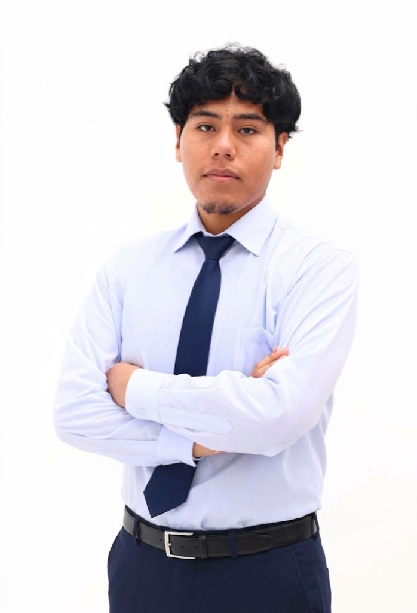

BETA PÚBLICAproducto estrella

PixPin Max
Tu cuaderno de ingeniería: captura y anota, abre planos .dwg, modelos Revit/IFC y terrenos LandXML, y ordénalo todo por proyectos. Sin nube y sin cuentas.
WindowsAndroidRustKotlin

hola, soy max · ing. civil · fundadorSoy Max Mamani, ingeniero civil por la UPC, becario PRONABEC y fundador de MAIRUMAX, una Sociedad BIC que crea herramientas con inteligencia artificial para el sector AEC y devuelve valor a la comunidad.
Ingeniero civil que programa. Crea las herramientas que le hubiera gustado tener en la obra y en la universidad.
“Fundé MAIRUMAX para contribuir con la sociedad: que la tecnología que hoy solo usan unos pocos llegue a cada estudiante, ingeniero y obra del país, y que lo que ganemos vuelva a la comunidad que me formó.”— Max, fundador
Por área · Autodesk ATC, PMI, CIP y Aspire Institute
Herramientas que uso a diario y nivel actual
De la práctica municipal a fundar una empresa
Estado actual de la empresa y sus proyectos
Donde se cruzan la ingeniería civil y el software
Lo que viene
IA aplicada e innovación tecnológica para el sector AEC, con herramientas de alta calidad, alto nivel de optimización y diseñadas desde la práctica_real de obra y oficina.
Abre cada archivo. A la izquierda, cómo lo pensamos; a la derecha, qué significa para ti.
Como Sociedad BIC buscamos rentabilidad e impacto a la vez. Ejecuta el ciclo y mira cómo cada aporte termina volviendo al sector.
Crear herramientas tecnológicas e inteligentes de alta calidad que optimicen el trabajo de los profesionales y empresas del sector AEC, impulsando la innovación y fortaleciendo a la comunidad mediante la colaboración, la formación y las alianzas, de manera sostenible y rentable.
Ser la empresa líder en innovación tecnológica e inteligencia artificial aplicada al sector AEC en la región, reconocida por la calidad de sus herramientas y por haber impulsado el crecimiento de miles de profesionales, universidades y empresas del sector.
Lo que ya puedes probar, lo que estoy construyendo y lo que viene. Todo nace de un problema real de la obra, la oficina o la universidad.
Tu cuaderno de ingeniería: captura y anota, abre planos .dwg, modelos Revit/IFC y terrenos LandXML, y ordénalo todo por proyectos. Sin nube y sin cuentas.
Se conecta a la mensajería y las llamadas de la obra, registra incidencias y avances, y emite un informe diario contrastado contra el cronograma para reducir retrabajos.
✓ validado en una obra en ejecución
Organiza las fuentes de una tesis en un lienzo visual y verifica cada cita contra bases académicas (CrossRef, Semantic Scholar, OpenAlex) antes de usarla.
✓ en uso en mi propia tesis
</> ver en GitHub ↗Memorias de cálculo estructural generadas y ordenadas en minutos, listas para revisión.
</> ver en GitHub ↗Lecturas de nivel y control de pistas y veredas desde el celular, en campo.
</> ver en GitHub ↗Metrados, documentación técnica e informes con IA. ¿Tienes una idea? Cuéntamela.
Prueba las herramientas antes que nadie y ayúdanos a mejorarlas.